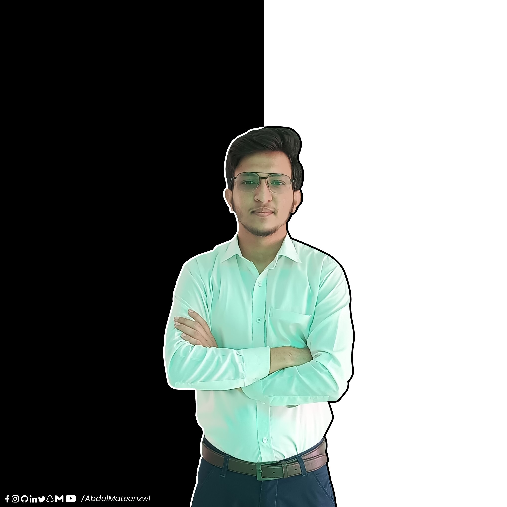

Abdul Mateen
Web Developer
As Creative, Passionate and Consistent Student I am pursuing my Bachelor's degree in Computer Science. I have been part of multiple Societies, Communities and been a starting member of UET Tech Community. I always try to find and learn from new opportunities. My goal is to work as a software developer and contribute to innovative technology solutions. Being Creative I have multiple outstanding projects solo and in groups.
